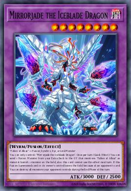

YOUR DUEL ROOM
Your decks.
Either side of the table.
Learn the line. Face the interruption. Play it again.
Choose your deck, choose your rival, and take the seat you want.

CRIMSON ABYSSTHE ICEBLADE DRAGON
01 / CHOOSE YOUR DECKS
Set the matchup
TWO INDEPENDENT PILOTS
A fresh duel, every time.
Both pilots follow their deck plan and compare legal lines. Pause to study the actual decisions.
Optimal pilot · one serious policy. Random hands, deterministic decisions.
Preparing your practice room.
The engine handles card effects, legal summons, response windows and battle damage. The pilots use bounded engine-replayed combo search, Doctrine routes and a blunder guard. They can still make poor strategic choices; a familiar combo can still be the sensible route for a given hand. Saved deck profiles are loaded as-is; current tournament legality has not been rechecked. Side Decks are available to inspect and export; match siding is not included yet.